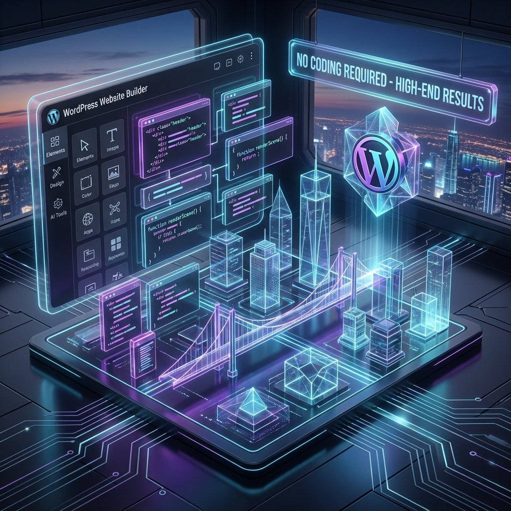
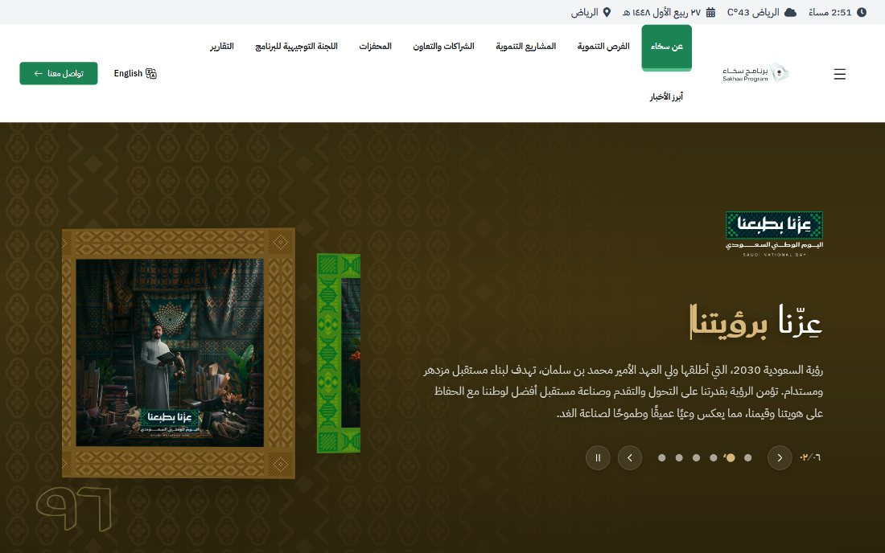
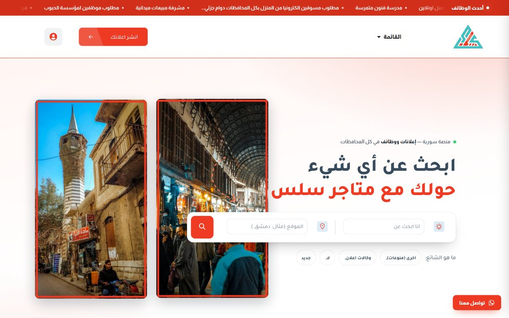
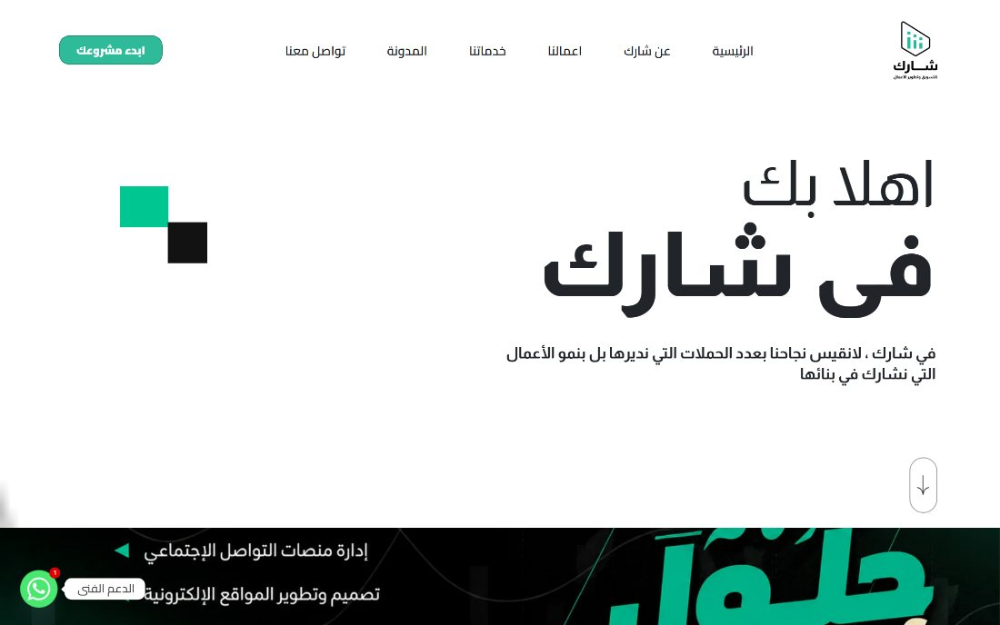
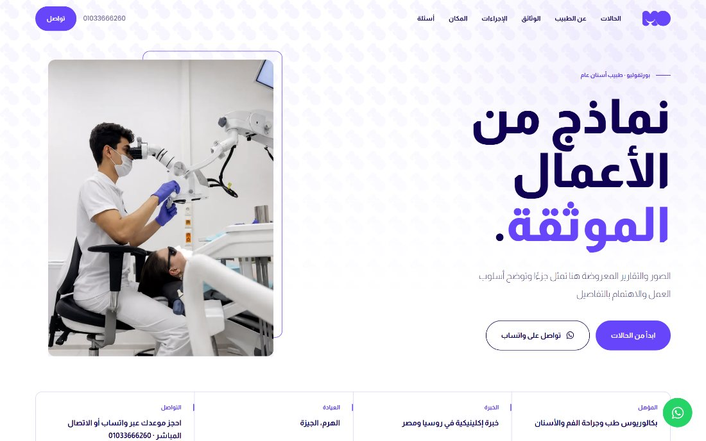
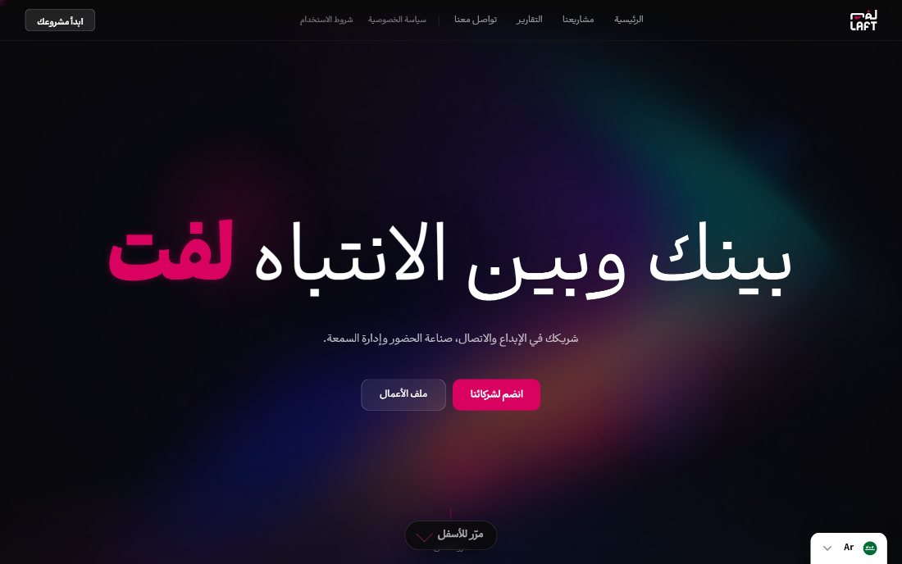
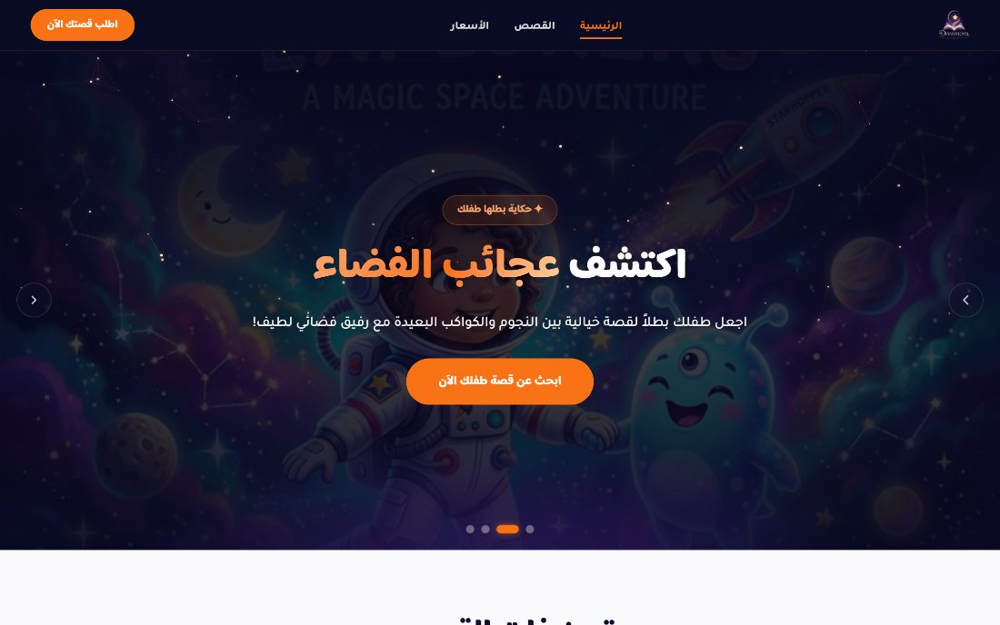
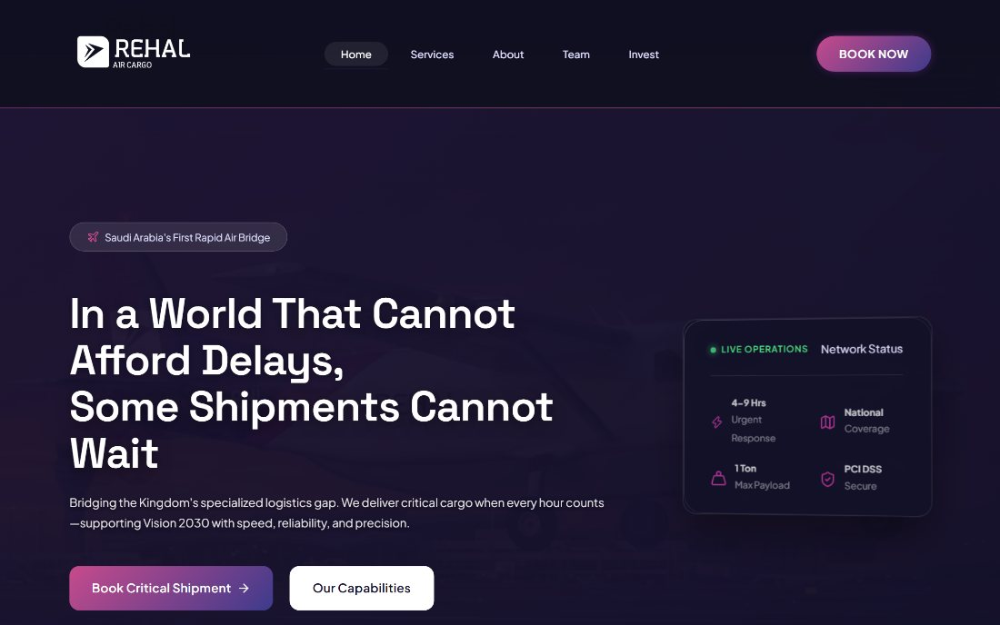
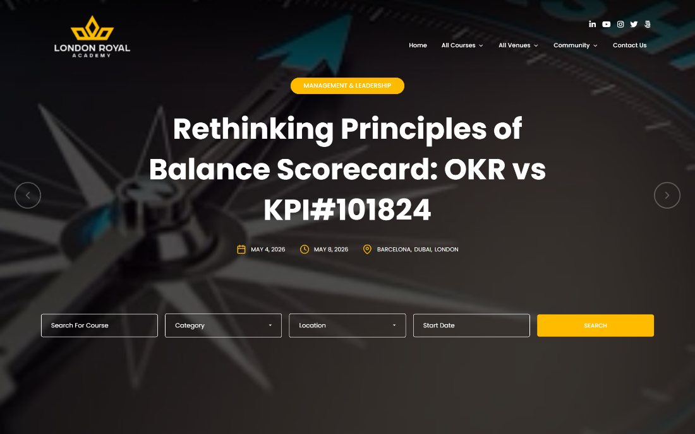

Figma
Every page is drawn and approved in Figma before anything is built. You see the layout, the type and the spacing while they are still cheap to change.
WordPress design and build · since 2020
I design in Figma, then build in Elementor Pro with custom CSS. Online stores, course platforms and business sites, for clients across the Arab world, Europe and America. Nothing starts from a purchased theme, and every page stays editable after the handover.
About
You approve the design in Figma before a line of it is built — and you can still edit every page the day it becomes yours.
Counted from the first project in 2020.

My story
A site is finished when the owner can change it without me.
I built my first WordPress sites in 2020. The count has since passed 210, for clients across the Arab world, Europe and America. Most of them are stores, course platforms and portfolio sites.
The method has not changed. I draw the pages in Figma, you approve them, then I build them in Elementor Pro and write the CSS by hand. Nothing starts from a purchased theme, and nothing ships that you cannot edit yourself.
The stack
Six things every project runs on. The first two are the ones people usually get backwards.
Every page is drawn and approved in Figma before anything is built. You see the layout, the type and the spacing while they are still cheap to change.
I build the approved design in Elementor Pro and write the CSS by hand. Nothing starts from a purchased theme, and the pages stay editable after handover.
Theme structure, plugin choices and a clean admin. The screen your team logs into gets the same attention as the one visitors see.
Product pages, cart and checkout, set up so the catalogue and the payment methods can grow later without a rebuild.
LearnDash and TutorLMS for selling courses, with the enrolment and content access rules that have to go with them.
Image weight, script loading, heading structure and metadata are handled during the build, not bolted on after launch.
Services
Each one is designed in Figma first and handed over in a state you can edit.
Portfolios and CVs. One page or several, built around the work you actually want people to look at.
WooCommerce, from the product page through to the checkout, with the payment methods your buyers already use.
LearnDash or TutorLMS: lessons, enrolment and access rules for selling what you teach.
You already bought a theme. I reshape it around your brand and take out the parts that are fighting your content.
No theme underneath. The design starts on a blank Figma page and the build follows it exactly.
The content stays, the structure gets fixed. For a site that still works but no longer looks like the business behind it.
The difference
The same brief, two ways of working. The gap between them shows up after launch, not on launch day.
Standard build
Premium build
Tell me what you are building and I will tell you what it takes.
Start a projectHow the work runs
The same sequence on every project, so you always know what happens next and what I need from you.
Step 1 of 4.
We agree what the site has to do, who it is for and which pages it needs. Scope is settled before anything is drawn.
Step 2 of 4.
Every screen is drawn in Figma first. You review layout, type and colour there, while changes are still cheap.
Step 3 of 4.
The approved design is built in WordPress with Elementor Pro and custom CSS. Nothing starts from a purchased theme.
Step 4 of 4.
The site goes live and you get a walkthrough of the editor, so you can change text and images yourself. Support runs for 180 days.
Selected work
Seven are online now. The eighth is finished and waiting on its production domain.

A Saudi Ministry of Human Resources and Social Development programme. I am the site's lead admin.
Visit the site
A classifieds marketplace carrying more than 4,000 real listings, with much of the functionality custom-coded rather than assembled from plugins.
Visit the site

A dental practice, with the interactions hand-coded rather than driven by plugins.
Visit the site
A large Saudi B2B brand. The build is finished and waiting on its production domain.
Launching soon


Eight of two hundred and ten.
Start a projectThe row travels sideways as you scroll. Swipe it by hand at any time.
Client feedback
People who hired me, in their own words.
Mohamed understood what I needed from the first call. The site looks like a professional practice, and the process was calm from start to finish.
My store looks the way I pictured it and the checkout simply works. He was patient with every change I asked for, and he explained why some of them were a bad idea.
I asked for a course platform and got one. Students find their way around it without help, and I add a new lesson myself in a few minutes.
Timeline
One year at a time, and what each one added to how the work is done today.
2020
Learned WordPress properly rather than plugin by plugin, and shipped the first custom sites for real clients.
2021
Moved into e-commerce: WooCommerce catalogues, payment setup and checkout flows a shop owner can run without help.
2022
Started building for clients across the Arab world, Europe and America, which meant handling different languages, currencies and time zones as a matter of routine.
2023
Added LMS work: lessons, enrolment and student access for educators who sell what they know online.
2024
Settled the method still used today: design every screen in Figma, then build it in Elementor Pro with custom CSS.
2025
Turned attention to what happens after launch: page weight, loading behaviour and the small interface details that separate a finished site from a live one.
2026
Where the work sits now: builds handed over with a walkthrough and 180 days of support, so the site keeps moving without waiting on me.
Contact
Three short steps. Answer them and I reply within 24 hours.
Press Send in WhatsApp to deliver it. I read every message myself and reply within 24 hours.
WhatsApp did not open? Open it hereWould rather skip the form?
Questions
The terms of a project, stated plainly.
No. Every layout is drawn in Figma first, then built in WordPress with Elementor Pro and custom CSS written for that layout. There is no demo import and no marketplace theme underneath.
Because you keep the site after I hand it over. The design comes from Figma and the custom CSS, so the site does not look like a template. Elementor Pro is what makes it editable afterwards, by you, without a developer on retainer.
Yes. You get the WordPress dashboard and the Elementor editor. Text, images, products, posts and prices are yours to change. Nothing that a client normally needs to update is locked behind code.
For the first seven days after a project starts, you can stop it and have the payment returned in full. You do not have to justify the decision. After that window the project runs to its agreed end.
Support runs for 180 days from the day the site goes live. It covers what was built: anything that breaks, anything that behaves differently from what we agreed, and your questions about editing the site yourself.
Four methods, depending on where you are:
Yes. Since 2020 I have delivered more than 210 projects for clients across the Arab world, Europe and America. Bank transfer and PayPal cover payment from outside Egypt, and the whole project runs over email and WhatsApp.
After launch
Support runs for 180 days from the day the site goes live. The first seven days of a project also carry a money-back window: stop it inside that week and the payment is returned. Both terms are set before any work starts, so neither one is a favour asked for later.